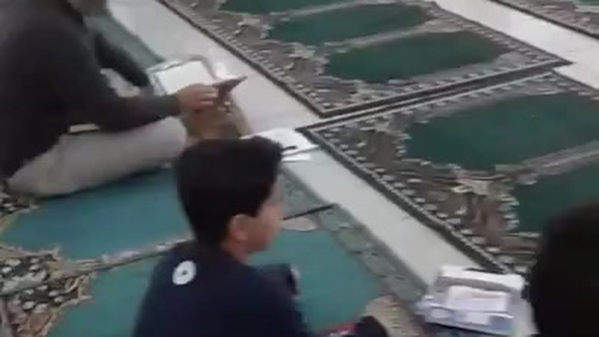

▶
حصة القرآن في المسجد
Qur'an Class in the Mosque
اقترحت إقامة بعض حصص القرآن في المسجد بعدما علمت أن عددًا من الطلاب لم يسبق لهم حضور حلقة قرآن فيه.
I proposed holding selected Qur'an lessons in the mosque after learning that several students had never experienced a Qur'an circle there.
مشاهدة الفيديوهات ←Watch videos →